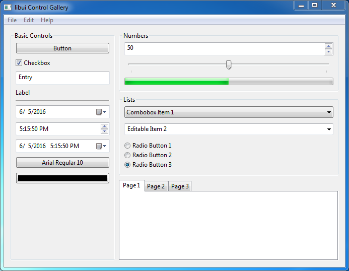
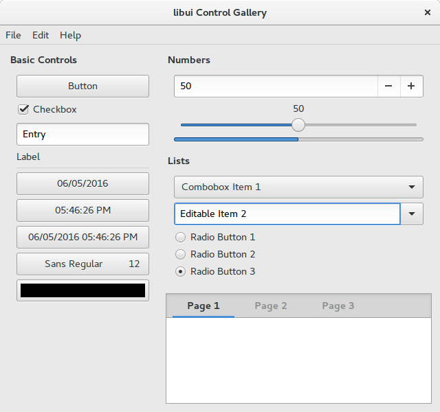
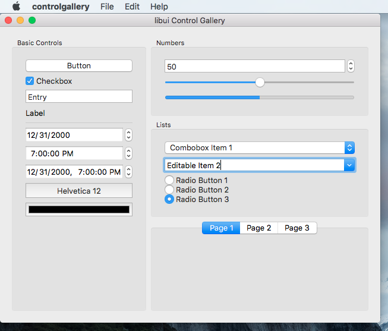

Fork of andlabs/libui. This README is being written.


About
Simple and portable (but not inflexible) GUI library in C that uses the native GUI technologies of each platform it supports.
Status
libui-ng is currently mid-alpha software.
See CHANGELOG.md
Old announcements can be found in the news.md file.
Runtime Requirements
- Windows: Windows Vista SP2 with Platform Update or newer
- Unix: GTK+ 3.10 or newer
- Mac OS X: OS X 10.8 or newer
Build Requirements
- All platforms:
- Windows: either
- Microsoft Visual Studio 2013 or newer (2013 is needed for
va_copy()) — you can build either a static or a shared library - MinGW-w64 (other flavors of MinGW may not work) — you can only build a static library; shared library support will be re-added once the following features come in:
- Isolation awareness, which is how you get themed controls from a DLL without needing a manifest
- Microsoft Visual Studio 2013 or newer (2013 is needed for
- Unix: nothing else specific
- Mac OS X: nothing else specific, so long as you can build Cocoa programs
Building
libui-ng mainly uses the standard Meson build options.
Once this completes, everything will be under build/meson-out/.
libui-ng specific options:
-Dtests=(true|false)controls whether tests are built; defaults totrue-Dexamples=(true|false)controls whether examples are built; defaults totrue
Most important Meson options:
--buildtype=(debug|release|...)controls the type of build made; the default isdebug. For a full list of valid values, consult the Meson documentation.--default-library=(shared|static)controls whether libui is built as a shared library or a static library; the default isshared. You currently cannot specifyboth, as the build process changes depending on the target type (though I am willing to look into changing things if at all possible).-Db_sanitize=whichallows enabling the chosen sanitizer on a system that supports sanitizers. The list of supported values is in the Meson documentation.--backend=backendallows using the specifiedbackendfor builds instead ofninja(the default). A list of supported values is in the Meson documentation.--wrap-mode=(forcefallback|nofallback|nodownload|...)controls which cmocka library version to use in test enabled builds. The default isforcefallbackto pull and build a local copy. Package maintainers may wish to choosenofallbackto use the system's library and declarecmockaa build time dependency ornodownload, see the Meson documentation for more details.
Most other built-in options will work, though keep in mind there are a handful of options that cannot be overridden because libui depends on them holding a specific value; if you do override these, though, libui will warn you when you run meson.
The Meson website and documentation has more in-depth usage instructions.
For the sake of completeness, I should note that the default value of --layout is flat, not the usual mirror. This is done both to make creating the release archives easier as well as to reduce the chance that shared library builds will fail to start on Windows because the DLL is in another directory. You can always specify this manually if you want.
Backends other than ninja should work, but are untested by me.
Testing
Automated Unit Tests
Run the included unit tests via meson test -C build. Alternatively you can also run the unit executable manually.
Manual Testing Suite
Run the manual quality assurance test suite via qa and follow the instructions laid out within.
Installation
Meson also supports installing from source; if you use Ninja, just do
When running meson, the --prefix option will set the installation prefix. The Meson documentation has more information, and even lists more fine-grained options that you can use to control the installation.
Arch Linux
Can be built from AUR: https://aur.archlinux.org/packages/libui-ng-git/
Documentation [WIP]
API, check the modules section for an overview of (nearly all) uiControls.
Consult the ui.h comments for the uiControls missing in the docs.
Check the examples directory for fully fledged examples. Check out the tests directory and subdirectories for more real world usage.
Language Bindings
libui was originally written as part of my package ui for Go. Now that libui is separate, package ui has become a binding to libui. As such, package ui is the only official binding.
Other people have made bindings to other languages:
| Language | Bindings |
|---|---|
| Beef | libui-beef |
| C++ | libui-cpp, cpp-libui-qtlike |
| C# / .NET Framework | LibUI.Binding |
| C# / .NET Core | DevZH.UI, SharpUI |
| CHICKEN Scheme | wasamasa/libui |
| Common Lisp | jinwoo/cl-ui |
| Crystal | libui.cr, hedron, iu |
| D | DerelictLibui (flat API), libuid (object-oriented) |
| Euphoria | libui-euphoria |
| Harbour | hbui |
| Haskell | haskell-libui |
| Janet | JanetUI |
| JavaScript/Node.js | libui-node, libui.js (merged into libui-node?), proton-native, vuido |
| Julia | Libui.jl |
| Kotlin | kotlin-libui |
| Lua | libuilua, libui-lua, lui, lui |
| Nim | ui, uing |
| Perl6 | perl6-libui |
| PHP | ui, Ardillo |
| Python | pylibui |
| Ring | RingLibui |
| Ruby | libui-ruby, LibUI, Glimmer DSL for LibUI |
| Rust | libui-ng-sys, boing, libui-rs, libui |
| Scala | scalaui |
| Swift | libui-swift |
| V | v-uing |
| Zig | zig-libui-ng |
Frequently Asked Questions
Why does my program start in the background on OS X if I run from the command line?
OS X normally does not start program executables directly; instead, it uses Launch Services to coordinate the launching of the program between the various parts of the system and the loading of info from an .app bundle. One of these coordination tasks is responsible for bringing a newly launched app into the foreground. This is called "activation".
When you run a binary directly from the Terminal, however, you are running it directly, not through Launch Services. Therefore, the program starts in the background, because no one told it to activate! Now, it turns out there is an API that we can use to force our app to be activated. But if we use it, then we'd be trampling over Launch Services, which already knows whether it should activate or not. Therefore, libui does not step over Launch Services, at the cost of requiring an extra user step if running directly from the command line.
Contributing
See CONTRIBUTING.md
Screenshots
From examples/controlgallery:


